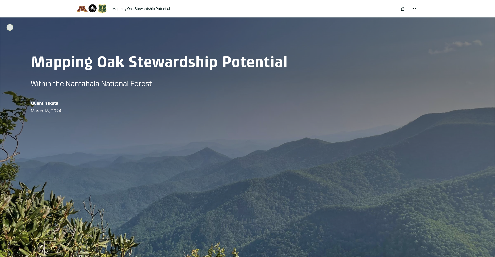

Mapping Oak Stewardship Potential – Nantahala National Forest
My Master of Science thesis summarized in an ArcGIS Online StoryMap. This project maps the realized niche of five oak species across the Nantahala Mountains to support management prioritization and silvicultural planning.